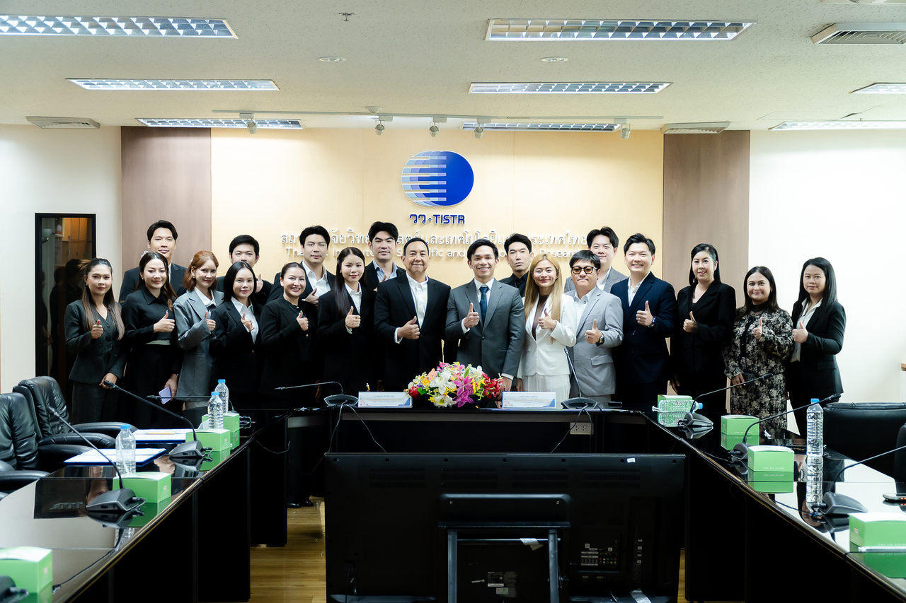
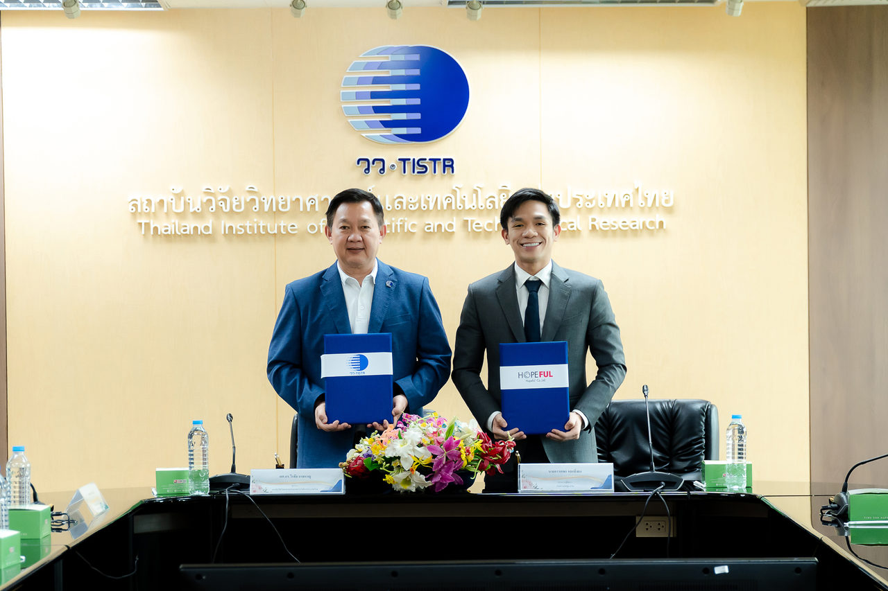
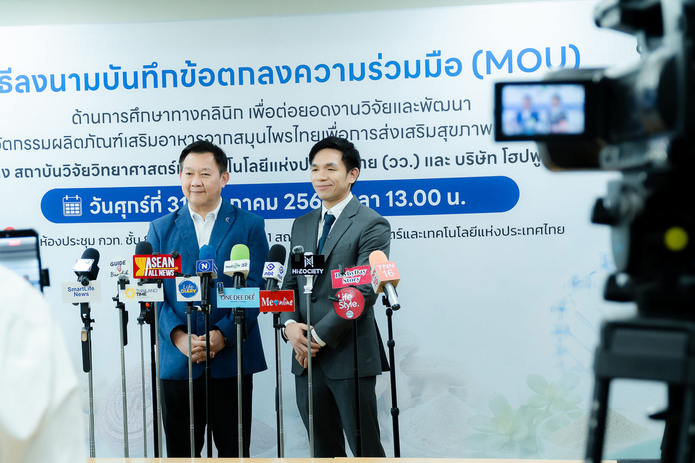
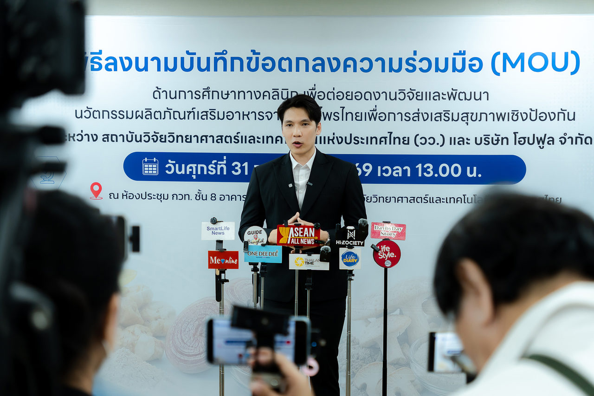

Relife ผนึกความร่วมมือ โฮปฟูล–วว. เดินหน้าวิจัยนวัตกรรมโภชนาการเพื่อสุขภาพ
เผยแพร่ 2026-10-09 · โดย Hopeful Relife
รีไลฟ์ โซลูชั่นส์ ร่วมพิธีลงนามความร่วมมือระหว่างบริษัท โฮปฟูล จำกัด และ วว. (31 ก.ค. 2569) เพื่อศึกษาและพัฒนานวัตกรรมผลิตภัณฑ์เสริมอาหาร 4 โครงการ ได้แก่ เห็ดหลินจือ, LAB BALANCE, BETA CARE และ MEMORA
บริษัท รีไลฟ์ โซลูชั่นส์ จำกัด ผู้ดูแลร้าน Hopeful Relife เข้าร่วมพิธีลงนามความร่วมมือระหว่าง บริษัท โฮปฟูล จำกัด (Hopeful) และ สถาบันวิจัยวิทยาศาสตร์และเทคโนโลยีแห่งประเทศไทย (วว.) เพื่อสนับสนุนการศึกษา วิจัย และพัฒนานวัตกรรมผลิตภัณฑ์เสริมอาหารและโภชนาการเพื่อสุขภาพ
พิธีดังกล่าวจัดขึ้นเมื่อวันที่ 31 กรกฎาคม 2569 ณ วว. เทคโนธานี จังหวัดปทุมธานี ถือเป็นอีกหนึ่งก้าวสำคัญของการนำองค์ความรู้ด้านวิทยาศาสตร์ งานวิจัย และเทคโนโลยี มาต่อยอดสู่การพัฒนาผลิตภัณฑ์สุขภาพที่ตอบโจทย์ผู้บริโภคอย่างเหมาะสม
สำหรับรีไลฟ์ โซลูชั่นส์ การเข้าร่วมพิธีครั้งนี้สะท้อนความตั้งใจในการคัดเลือกและนำเสนอผลิตภัณฑ์สุขภาพอย่างรับผิดชอบ ให้ความสำคัญกับข้อมูลที่ถูกต้อง ความโปร่งใส และการดูแลลูกค้าในระยะยาว
รีไลฟ์ โซลูชั่นส์ เข้าร่วมพิธีความร่วมมือด้านงานวิจัยสุขภาพ

การเข้าร่วมพิธีครั้งนี้ไม่เพียงเป็นการร่วมแสดงความยินดี แต่ยังเป็นโอกาสสำคัญที่ทำให้ทีมงานได้เรียนรู้ทิศทางการวิจัยและพัฒนาผลิตภัณฑ์สุขภาพในอนาคต ทั้งการศึกษาวัตถุดิบ การพัฒนาสูตรผลิตภัณฑ์ การประเมินคุณภาพ ตลอดจนการติดตามข้อมูลหลังผลิตภัณฑ์ออกสู่ตลาด
เราเชื่อว่าผู้บริโภคยุคใหม่ไม่ได้พิจารณาผลิตภัณฑ์จากข้อความโฆษณาเพียงอย่างเดียว แต่ให้ความสำคัญกับที่มาของผลิตภัณฑ์ ส่วนประกอบ กระบวนการพัฒนา และข้อมูลทางวิชาการที่ใช้ประกอบการตัดสินใจได้
ความร่วมมือระหว่าง Hopeful และ วว. เพื่อพัฒนาผลิตภัณฑ์สุขภาพ

ความร่วมมือนี้มีเป้าหมายเพื่อศึกษา วิจัย และพัฒนานวัตกรรมผลิตภัณฑ์เสริมอาหารและผลิตภัณฑ์โภชนาการเพื่อสุขภาพเชิงป้องกัน โดยผสานความเชี่ยวชาญของทั้งสองฝ่าย — Hopeful มีประสบการณ์ในการพัฒนาผลิตภัณฑ์และเข้าใจความต้องการของผู้บริโภค ขณะที่ วว. มีองค์ความรู้ด้านวิทยาศาสตร์ นักวิจัย ห้องปฏิบัติการ และกระบวนการศึกษาที่เป็นระบบ
ความร่วมมือนี้ช่วยสนับสนุนการพัฒนาผลิตภัณฑ์ในหลายด้าน ได้แก่
- การศึกษาคุณสมบัติของวัตถุดิบและสารสำคัญ
- การวิจัยและพัฒนาสูตรผลิตภัณฑ์
- การตรวจสอบคุณภาพและความปลอดภัย
- การรวบรวมข้อมูลจากการใช้ผลิตภัณฑ์
- การต่อยอดวัตถุดิบและองค์ความรู้ของไทย
- การพัฒนาผลิตภัณฑ์ให้เหมาะกับความต้องการของผู้บริโภคแต่ละกลุ่ม
การทำงานร่วมกันระหว่างภาคเอกชนและหน่วยงานวิจัยของประเทศยังช่วยยกระดับมาตรฐานอุตสาหกรรมผลิตภัณฑ์เสริมอาหารของไทย และทำให้การพัฒนาผลิตภัณฑ์สุขภาพมีข้อมูลทางวิทยาศาสตร์ประกอบมากขึ้น
อย่างไรก็ตาม การเริ่มต้นโครงการวิจัยหรือการลงนามความร่วมมือยังไม่ถือเป็นข้อสรุปว่าผลิตภัณฑ์ใดสามารถป้องกัน บำบัด หรือรักษาโรคได้ ผลลัพธ์ต่าง ๆ จำเป็นต้องผ่านกระบวนการศึกษา วิเคราะห์ และประเมินตามหลักวิชาการ
การพัฒนานวัตกรรมโภชนาการสำหรับ 4 กลุ่มโรคเรื้อรัง
หนึ่งในหัวใจสำคัญของความร่วมมือคือการศึกษานวัตกรรมโภชนาการสำหรับผู้ที่ต้องการดูแลสุขภาพเฉพาะด้าน ครอบคลุม 4 กลุ่ม ได้แก่ โรคสะเก็ดเงิน โรคมะเร็ง โรคไต และภาวะสมองเสื่อมหรืออัลไซเมอร์
นวัตกรรมโภชนาการสำหรับกลุ่มโรคสะเก็ดเงิน
โรคสะเก็ดเงินเป็นภาวะเรื้อรังที่เกี่ยวข้องกับระบบภูมิคุ้มกันและการอักเสบของร่างกาย แนวทางการศึกษาจึงให้ความสนใจกับความเชื่อมโยงระหว่างระบบทางเดินอาหาร ภูมิคุ้มกัน และสุขภาพผิว โดยมุ่งศึกษาวัตถุดิบและสารสำคัญจากธรรมชาติ เพื่อต่อยอดเป็นผลิตภัณฑ์โภชนาการสำหรับผู้ที่ต้องการดูแลสุขภาพผิวและสุขภาพโดยรวม
ผลิตภัณฑ์โภชนาการสำหรับผู้ป่วยมะเร็ง
ผู้ที่อยู่ระหว่างการรักษาโรคมะเร็งอาจต้องการพลังงาน โปรตีน และสารอาหารแตกต่างจากบุคคลทั่วไป บางรายรับประทานอาหารได้น้อยหรือต้องการโภชนาการเพิ่มเติมตามคำแนะนำของแพทย์ การพัฒนาจึงเน้นปริมาณพลังงาน โปรตีน คุณค่าทางโภชนาการ ความสะดวกในการบริโภค และความเหมาะสมกับแต่ละบุคคล
ผลิตภัณฑ์ในกลุ่มนี้มีวัตถุประสงค์เพื่อสนับสนุนการได้รับสารอาหารตามความเหมาะสม ไม่ใช่ผลิตภัณฑ์สำหรับรักษาโรค และควรบริโภคภายใต้คำแนะนำของแพทย์หรือนักกำหนดอาหาร
งานวิจัยผลิตภัณฑ์เสริมอาหารสำหรับกลุ่มโรคไต
ผู้ที่มีปัญหาสุขภาพไตต้องเลือกอาหารและผลิตภัณฑ์เสริมอาหารอย่างระมัดระวัง เพราะความต้องการสารอาหารของแต่ละคนแตกต่างกันตามระยะของโรค ผลตรวจสุขภาพ และแผนการรักษา งานวิจัยกลุ่มนี้จึงเน้นการรวบรวมข้อมูลด้านความปลอดภัย ประสิทธิภาพ และผลลัพธ์จากการใช้ผลิตภัณฑ์อย่างเป็นระบบ
ผู้ป่วยโรคไต ผู้ที่มีค่าการทำงานของไตผิดปกติ หรือผู้ที่รับประทานยาเป็นประจำ ควรปรึกษาแพทย์ก่อนใช้ผลิตภัณฑ์เสริมอาหารทุกชนิด
นวัตกรรมดูแลสมองสำหรับภาวะสมองเสื่อมและอัลไซเมอร์
ภาวะสมองเสื่อมและโรคอัลไซเมอร์ส่งผลต่อความจำ การคิดวิเคราะห์ การตัดสินใจ และการใช้ชีวิตประจำวัน แนวทางการศึกษาจึงมุ่งเน้นสารสกัดจากธรรมชาติที่เกี่ยวข้องกับสุขภาพสมอง ระบบประสาท และความจำ โดยต้องศึกษาทั้งชนิดของวัตถุดิบ ปริมาณสารสำคัญ สูตรผลิตภัณฑ์ และข้อมูลด้านความปลอดภัย
ทั้งนี้ ผลิตภัณฑ์เสริมอาหารไม่สามารถใช้แทนการตรวจวินิจฉัยหรือการรักษาจากแพทย์ได้
เจาะลึก 4 โครงการวิจัยสำคัญของ Hopeful และ วว.
ภายใต้ความร่วมมือนี้มีโครงการสำคัญ 4 โครงการ ครอบคลุมทั้งการติดตามผลิตภัณฑ์หลังออกสู่ตลาดและการพัฒนาผลิตภัณฑ์สุขภาพสูตรใหม่
1. การศึกษาทางคลินิกระยะหลังออกสู่ตลาด
ศึกษาผลิตภัณฑ์ที่มีสารสำคัญจากเส้นใยเห็ดหลินจือ เพื่อเก็บรวบรวมข้อมูลหลังผลิตภัณฑ์ออกสู่ตลาดอย่างเป็นระบบ เช่น วิธีการบริโภค ความต่อเนื่องในการใช้ ข้อมูลด้านความปลอดภัย และผลลัพธ์ตามตัวชี้วัดที่กำหนด ข้อมูลเหล่านี้นำไปใช้ปรับปรุงสูตร วิธีรับประทาน คำแนะนำ และมาตรฐานการดูแลผู้บริโภคในอนาคต
2. LAB BALANCE
โครงการพัฒนาผลิตภัณฑ์โภชนาการที่ให้พลังงานและโปรตีนสูง สำหรับผู้ที่มีความต้องการสารอาหารเฉพาะ โดยเฉพาะกลุ่มผู้ป่วยมะเร็งที่อาจได้รับพลังงานหรือโปรตีนจากอาหารประจำวันไม่เพียงพอ และนำวัตถุดิบของไทยอย่าง เห็ดกระด้าง มาศึกษาต่อยอดเป็นส่วนประกอบ โดยพิจารณาทั้งคุณค่าทางโภชนาการ คุณภาพ ความปลอดภัย รสชาติ และความสะดวกในการบริโภค
3. BETA CARE
โครงการศึกษาการใช้ อินูลินจากแก่นตะวัน ร่วมกับ สารสกัดจากขมิ้นชัน เพื่อพัฒนานวัตกรรมโภชนาการที่เชื่อมโยงการดูแลระบบทางเดินอาหาร ภูมิคุ้มกัน และสุขภาพผิว อินูลินเป็นใยอาหารที่ได้รับความสนใจในฐานะแหล่งอาหารของจุลินทรีย์บางชนิดในลำไส้ ส่วนขมิ้นชันเป็นสมุนไพรไทยที่ถูกนำมาศึกษาในหลากหลายด้าน การศึกษาร่วมกันจึงเป็นอีกแนวทางในการพัฒนาผลิตภัณฑ์สำหรับผู้ที่ต้องการดูแลสุขภาพโดยรวม รวมถึงกลุ่มที่มีปัญหาโรคสะเก็ดเงิน
อย่างไรก็ตาม คุณสมบัติและความเหมาะสมของผลิตภัณฑ์จะต้องพิจารณาจากผลการวิจัยหลังโครงการดำเนินการเสร็จสิ้น
4. MEMORA
โครงการศึกษาการใช้ พรมมิ ร่วมกับ สารสกัดจากเห็ดหัวลิง ซึ่งเป็นวัตถุดิบธรรมชาติที่ได้รับความสนใจในงานวิจัยเกี่ยวกับสมอง ระบบประสาท และความจำ มุ่งศึกษาส่วนประกอบ สูตร ปริมาณสารสำคัญ และข้อมูลด้านความปลอดภัย เพื่อพัฒนาผลิตภัณฑ์สำหรับผู้สูงอายุและผู้ที่ต้องการดูแลสุขภาพสมอง
แม้วัตถุดิบดังกล่าวจะได้รับความสนใจด้านการดูแลสมอง แต่ผลิตภัณฑ์เสริมอาหารไม่ใช่ยา และไม่สามารถใช้แทนการรักษาภาวะสมองเสื่อมหรือโรคอัลไซเมอร์ได้ ผู้ที่มีอาการหลงลืมผิดปกติ สับสน พฤติกรรมเปลี่ยนแปลง หรือมีปัญหาในการใช้ชีวิตประจำวัน ควรเข้ารับการประเมินจากแพทย์
จากการสร้างความน่าเชื่อถือสู่ความมั่นใจของลูกค้า

ในยุคที่ผู้บริโภคค้นหาข้อมูลผลิตภัณฑ์สุขภาพได้รวดเร็ว ความน่าเชื่อถือไม่ได้เกิดจากข้อความโฆษณาหรือคำบอกเล่าเพียงอย่างเดียว แต่เกิดจากที่มาของผลิตภัณฑ์ กระบวนการพัฒนา ข้อมูลทางวิทยาศาสตร์ และความรับผิดชอบของผู้ให้บริการ
งานวิจัยช่วยให้การสื่อสารกับลูกค้ามีข้อมูลรองรับอย่างเป็นระบบ ทั้งเรื่องส่วนประกอบ วิธีบริโภค ข้อจำกัด และข้อควรระวัง ทีมงานจึงให้คำแนะนำได้เหมาะกับแต่ละบุคคล และยกระดับการดูแลหลังการขายอย่างรับผิดชอบ เมื่อผู้บริโภคได้รับข้อมูลที่ถูกต้อง โปร่งใส และไม่กล่าวอ้างเกินจริง ก็ย่อมเกิดความไว้วางใจในระยะยาว
รีไลฟ์ โซลูชั่นส์ พร้อมสนับสนุนผลิตภัณฑ์สุขภาพที่พัฒนาบนพื้นฐานของงานวิจัย

การเข้าร่วมพิธีครั้งนี้เป็นอีกหนึ่งก้าวสำคัญของรีไลฟ์ โซลูชั่นส์ ในการร่วมสนับสนุนการพัฒนานวัตกรรมผลิตภัณฑ์เสริมอาหารและโภชนาการเพื่อสุขภาพ โครงการวิจัยทั้ง 4 โครงการสะท้อนความพยายามพัฒนาผลิตภัณฑ์สำหรับกลุ่มสุขภาพที่มีความต้องการแตกต่างกัน ตั้งแต่โรคสะเก็ดเงิน โรคมะเร็ง โรคไต ไปจนถึงภาวะสมองเสื่อมและอัลไซเมอร์
อย่างไรก็ตาม งานวิจัยทุกโครงการต้องผ่านขั้นตอนการศึกษา เก็บข้อมูล วิเคราะห์ และประเมินผลตามหลักวิชาการ การเริ่มต้นโครงการจึงยังไม่ใช่การยืนยันว่าผลิตภัณฑ์สามารถป้องกัน บำบัด หรือรักษาโรคได้
เรามุ่งมั่นสื่อสารข้อมูลผลิตภัณฑ์อย่างถูกต้อง เข้าใจง่าย และเหมาะสม พร้อมพัฒนามาตรฐานการดูแลลูกค้าก่อนและหลังการขาย หากต้องการดูข้อมูลส่วนประกอบ วิธีรับประทาน และคำเตือนของผลิตภัณฑ์ในโครงการ ดูได้ที่หน้า LAB BALANCE · BETA CARE · MEMORA
หมายเหตุ: บทความนี้จัดทำขึ้นเพื่อรายงานข้อมูลเกี่ยวกับความร่วมมือด้านการศึกษา วิจัย และพัฒนาผลิตภัณฑ์เท่านั้น ผลิตภัณฑ์เสริมอาหารไม่ใช่ยา ไม่มีผลในการป้องกันหรือรักษาโรค ผู้ที่มีโรคประจำตัว ใช้ยาเป็นประจำ หรืออยู่ระหว่างการรักษา ควรปรึกษาแพทย์หรือบุคลากรทางการแพทย์ก่อนรับประทานผลิตภัณฑ์เสริมอาหาร
บทความนี้มีวัตถุประสงค์เพื่อให้ความรู้ทั่วไปเท่านั้น ไม่ใช่คำแนะนำทางการแพทย์ หากมีข้อสงสัยเกี่ยวกับสุขภาพ ควรปรึกษาแพทย์หรือเภสัชกร